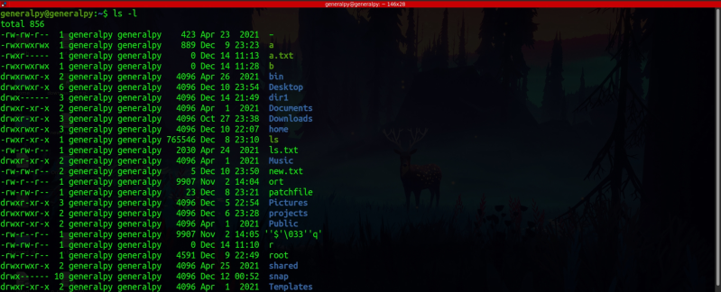
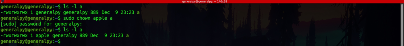
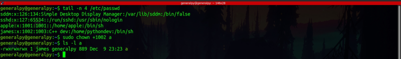
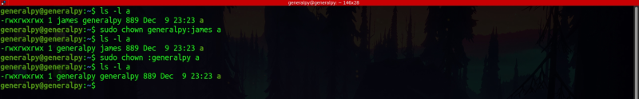
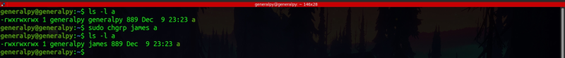

Every file in linux has a user and a group associated with it. By default user is the one who created the file and group is primary group of the creator.
We can list file's user and groups by using ls -l command.

We can use the chown command to change owner of a file. Chown can only be used by a root user.
sudo chown new_user file

We can also use user id instead of username to change the user. Though there are some cases when user name and user id are same. For example there is a user with id 100 and a user named 100. This is a case of ambiguity. In this case user name will be considered. So, to be on safe side, we add a + sign before user id.

We can also change file group by chown by adding a colon after username(or period in some distros) and then listing the group. We can also omit the user here.
sudo chown user:group[or user.group] file

There is a dedicated command chgrp to change group of the user.

We can use -R flag for recursive change of users and groups.